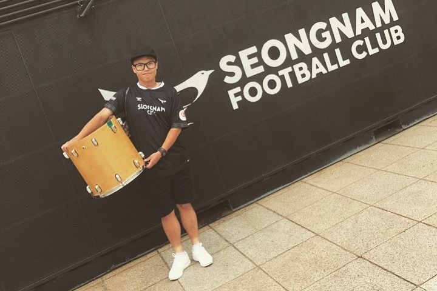

축구
2007년, 초등학교 5학년 때부터 성남FC의 경기장에서 응원을 했습니다. 제 삶의 많은 부분이 축구장에서의 인연과 맞닿아 있으며, 축구를 빼놓고 저를 설명하는 것은 불가능합니다. 현재 성남FC 팬 팟캐스트의 진행과 편집을 맡고 있습니다.
그는 어쩌다가 내가 만화를 그리기 시작했나 하고 자신의 이력을 검토해 보기 시작했다. (...) 입대하여 훈련을 마치자 어쩌다가 떨어진게 정훈이었고 정훈에서 어쩌다가 맡은 게 군내 신문 편집이었고 그리고 어쩌다가 보니까 거기에서 만화를 그리고 있었고 (...) 그야말로 '어쩌다가'의 연속이었다. 《차나 한 잔》, 김승옥
저는 모든 사람의 접근성을 생각하는 프론트엔드 개발자가 되는 것을 꿈꿉니다. 축구, 특히 제가 나고 자란 도시의 팀인 성남FC를 사랑합니다. 아름다운 디자인과 차별 반대 운동에 관심이 많습니다. 책 읽기, 특히 김애란 작가와 박상영 작가의 소설과 최승자 시인의 시를 좋아합니다. 대학에서 철학을 전공했으며, 2022년 2월에 졸업했습니다. 포토샵과 일러스트레이터를 다룰 줄 알고, 그것으로 축구장과 학생회에서 디자인 작업을 맡아왔습니다. 2020년엔 영상 편집 기술을 배워 친구들과 다큐멘터리를 만들었고, 요코하마 축구 영화제에서 상을 받았습니다.
2007년, 초등학교 5학년 때부터 성남FC의 경기장에서 응원을 했습니다. 제 삶의 많은 부분이 축구장에서의 인연과 맞닿아 있으며, 축구를 빼놓고 저를 설명하는 것은 불가능합니다. 현재 성남FC 팬 팟캐스트의 진행과 편집을 맡고 있습니다.
책 읽는 걸 좋아하며 특히 한국의 단편 소설을 좋아합니다. 가장 좋아하는 작가는 김애란 작가이며, 그 외에 박상영, 김세희, 임현, 최은영, 이기호, 장강명 작가의 소설도 참 재밌게 읽었습니다. 시인 중에선 최승자 시인을 좋아합니다.
고등학생 때 차별 반대 운동에 관심이 생겨 대학에서 철학을 전공했습니다. 서양 철학, 특히 고대 그리스 철학과 마르크스 철학에 관심이 많았습니다. 2015년도에 입학해 2022년 2월에 졸업했습니다.
포토샵과 일러스트레이터를 조금 다룰 줄 알아 축구 서포터즈와 학교 학생회에서 디자인 작업을 했습니다. 이러한 경험으로 코드로 디자인을 구현해 내는 프론트엔드 개발자에 흥미를 갖게 되었습니다.
2020년 성남FC의 팬 다큐멘터리를 만들며 편집과 디자인을 담당했습니다. 성남 교육 영화제와 일본의 요코하마 축구 영화제에 출품했고, 요코하마 축구 영화제에서 "베스트 서포터 상"을 수상했습니다. 유튜브에서 시청하실 수 있습니다!